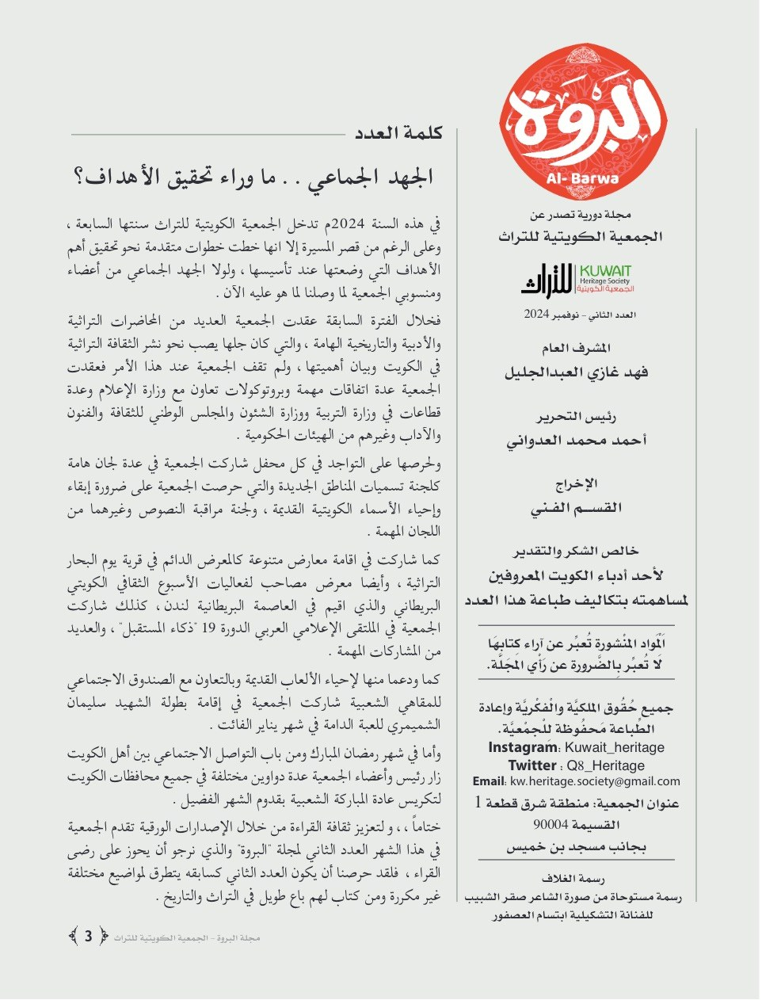

November 2024 · Magazine pages, Al-Barwa, issue 2, November 2024, Kuwait Heritage Society, pages 3, 13 and 39
Al-Barwa magazine, 2024: Al-Qatami among Al Zayed, and Lolwa Abdulwahab Al-Qatami at the Kuwait Heritage Society
What it is
1. Page 13, in the article «Kuwait and the Utub: the first renaissance, 1702 to 1760»: among the families who took part in sailing and pearl diving, «mostly families of Utbi origin, such as the family of Al Zayed (Al-Ghanim, Al-Qatami and Al-Saqr)». 2. Page 39: the Kuwait Heritage Society hosted Lolwa Abdulwahab Al-Qatami on Tuesday 3 October 2023 to talk about her life in the women’s movement and about her grandfather, «the famous Nakhuda Eissa Al-Qatami»; and on Wednesday 1 November 2023 she opened the Society’s exhibition «The Kuwaiti Woman: Heritage and Authenticity» at the museum of the Yawm Al-Bahhar village.
Why it matters
A heritage magazine that places Al-Qatami within Al Zayed with Al-Ghanim and Al-Saqr, and records Lolwa Abdulwahab Al-Qatami’s public role in 2023.
Page copies




Sources
Al-Barwa, issue 2, November 2024, Kuwait Heritage Society, general supervisor Fahad Ghazi Al-Abduljalil, editor in chief Ahmed Mohammed Al-Adwani, pages 3, 13 and 39
How this text was made: The author of the article on page 13 is not on the page sent.
Open in the interactive site